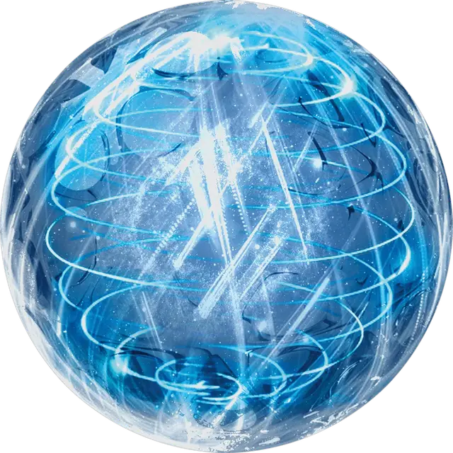

Парящая сфера
Driftglobe
Чудесный предмет, необычный

Рекомендованная стоимость 400 зм
Этот небольшой шар из толстого стекла весит 1 фунт. Если вы находитесь в пределах 60 футов от него, вы можете приказать ему излучать свет, эквивалентный свету заклинания Свет или Дневной свет (на ваш выбор). После применения эффекта Дневного света сфера не может применить этот эффект снова до следующего рассвета.
Действием Магия можете отдать другую команду, заставляя светящуюся сферу подняться в воздух и парить на высоте не более 5 футов над землей. Шар парит таким образом, пока вы или другое существо не схватит его. Если вы отойдете более чем на 60 футов от парящего шара, он следует за вами, пока не окажется в пределах 60 футов от вас, следуя кратчайшим путём. Если что-то помешает ему двигаться, шар плавно опускается на землю и становится неактивным, а его свет гаснет.